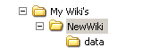
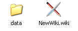

parent nodes: CommandLineSupport | UserFiles | WorkSpace
Wiki Control
Contents:
Back
General
The functions below can - unless mentioned otherwise - be found in the Wiki menu.
• Opening read only
The Wikidpad "Open wiki" dialog has an option that can be set, if a wiki is supposed to be opened "read only".
• Opening older wiki's
If a wiki to be opened was created with an older version of WikidPad or WikidPadCompact, Wikidpad can't determine the database type and will ask the user to specify it manually. If the wiki was created with the original WikidPad the right choice is "Original Gadfly", for WikidPadCompact it is "Compact Sqlite". The type will be stored in the wiki configuration file and Wikidpad will not have to ask for it again next time.
Top
Wiki management
• New
Creates a new wiki and opens it in the current workspace (Wikidpad window).
The name for the new wiki has to be a valid WikiWord. Wikidpad will offer to create it in the default wiki folder (see Settings: Default open/new dir.) but any folder can be chosen. Wikidpad will then ask to specify the database type to be used for the new Wiki. In the destination folder, Wikidpad will create a new folder with the name of the wiki and in it the newname.wiki file and a "Data" folder, that contains the wiki database. The .wiki file is actually the configuration file for the wiki and could be edited by hand.
 
• Open
Opens an existing wiki in the current workspace.
• Open in new window
Opens an existing wiki in a new workspace (window).
• Recent
Opens an existing wiki from the list "recently opened wiki's" in the current workspace.
• Clone (View menu!)
Opens the currently opened wiki in separate workspace, but nót in a separate proces. The function will do this despite the setting of "Single process per user" for the workspace.
Top
Favorites
The "Favorites" menu gives access to wiki's that are often needed and allows them to be opened by selecting a menu entry and optionally by an icon in the toolbar and/or by a shortcut.
• Add
To add a wiki to the favorites, choose "Add wiki" in the "Favorites" menu. This shows a dialog, that allows to specify:
the title for the wiki (it's name)a keyboard shortcut (e.g. "Alt-1") if desiredthe path or wiki URL of the wiki (by default, this field contains the path of the current wiki),if it should be opened in a new windowif it should have an icon in toolbar. If so, you can also enter
the position in toolbar relative to other favorite icons (up to 9 icons can be there)the name of the icon to show
Remarks:If multiple entries refer to the same toolbar position, only one of the icons is shown (chosen arbitrarily).
• Managing favorites
Currently advanced management can only be done by editing their textual specifications in the so-called functional page of the favorite wikis. To open it, either go in tree to "Views"->"Func. pages"->"Favorite wikis" or use in "Favorites" menu the entry "Manage favorites".
A line in the page follows the syntax:Title\tShortcut;Flags;Iconname=Path
The meaning of the individual parameters is:Title is the wiki title shown in "Favorites" menuAfter \t you can enter the shortcut. If you don't want a shortcut, you can omit the \t as wellFlags can contain an 'n' to show the wiki in a new window and/or a digit to determine icon position in toolbar. Flags can also be empty.Iconname is name of the iconPath can be a path or a wiki URL of the wiki to open
• Examples [1]
Only the necessary things:CoolWiki=C:\Data\Wikis\CoolWiki\CoolWiki.wiki
With shortcut:CoolWiki\tAlt-1=C:\Data\Wikis\CoolWiki\CoolWiki.wiki
With shortcut and new window:CoolWiki\tAlt-1;n=C:\Data\Wikis\CoolWiki\CoolWiki.wiki
Full blown with shortcut and icon "flash" at position 2 in toolbar:CoolWiki\tAlt-1;2n;flash=C:\Data\Wikis\CoolWiki\CoolWiki.wiki
Top
[1] Double backslashes used for visibility in preview!
Wiki maintenance
• Rebuild
This will completely rebuild the internal database for the wiki. This is sometimes necessary if the program previously terminated abnormally or if datafiles were deleted or added from outside of WikidPad.
The function can also be used to add large numbers of additional pages to the wiki. Copy ".wiki" wikiword files into the "data" directory, then choose "Rebuild Wiki" to rebuild the database to include these files.
Remark: This does not work for the "Compact Sqlite" database type.
• Reconnect
If during a WikidPad session the access to the wiki database files is lost (e.g. network connection drops), this might result in an error. The connection to the database then has to be reestablished, before it can be updated and work can progress.
In principal, WikidPad will automatically try to reconnect will ask if it should do so, each time an attempt is made to open or save a page. WikidPad can however also manually be told to try to reconnect, by using the "reconnect" function.
Remark: Autosave is automatically disabled until the connection is successfully reestablished.
• Vacuum
This function is only available if currently loaded wiki is of type "Original Sqlite" or "Compact Sqlite".
If information is deleted from an Sqlite database, the occupied hard disk space is not freed but later reused for new information to add. "Vacuum" makes this space available for the system again. After deleting large parts of a wiki, you can use "Vacuum" to free space, especially recommended for a "Compact Sqlite" wiki (where the page content is also stored in the database).
• Wiki info
This function displays information about the database type of the current wiki and the number of pages it contains.
Top
Deprecated
The use of functions in this section is deprecated for new and current Wiki's. The functions are outdated and only there for backwards compatibility and the support of quite old wiki's.
• Open as type
This function opens a wiki and álways asks for the database type to use. This is helpful when migrating from one database backend to another.
Top
Settings
Options
Wiki settings: General, wiki control
• First word at startup
Wiki word which should be shown as first one each time the wiki is opened. If the field is empty, the last words when the wiki was closed is shown on opening.
• Read only wiki
This option controls if a wiki can be changed or only can be opened as "read only".
• Wiki icon
Set here the name of icon to use in the system tray instead of the default icon. If the field is empty the default icon is used. The icon of the main window is not influenced by this setting (because it does not work).
• Wiki-bound hotkey
Wiki-bound hotkey to show/hide wiki. See OptionsDialog#App-bound# hotkey
Top
Application settings: General, wiki control
• New window on wiki URL
When double clicking on a wiki: URL, a new instance of the application is started, otherwise, the current instance loads the new wiki.
• Store relative pathes to wikis
Pathes to the recently opened wikis are stored as relative pathes if this is checked. Useful e.g. if you have WikidPad and your wikis on an USB-stick.
• Default open/new dir.
Directory to start when using "Wiki"->"New" or "Wiki"->"Open" in the menu. If empty, WikidPad chooses a default.
Application settings: User interface, wiki control
• Recent wikis list length
Set the number of wikis to show in menu "Wiki"->"Recent"
Top
previous: Back
parents: CommandLineSupport, UserFiles, WorkSpace
attributes: [tree_position: 2]
[help.status: done]